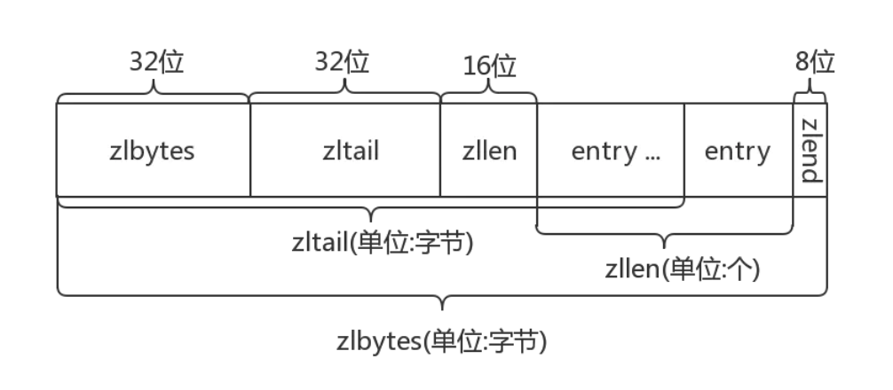
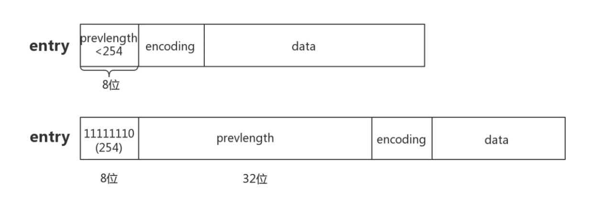
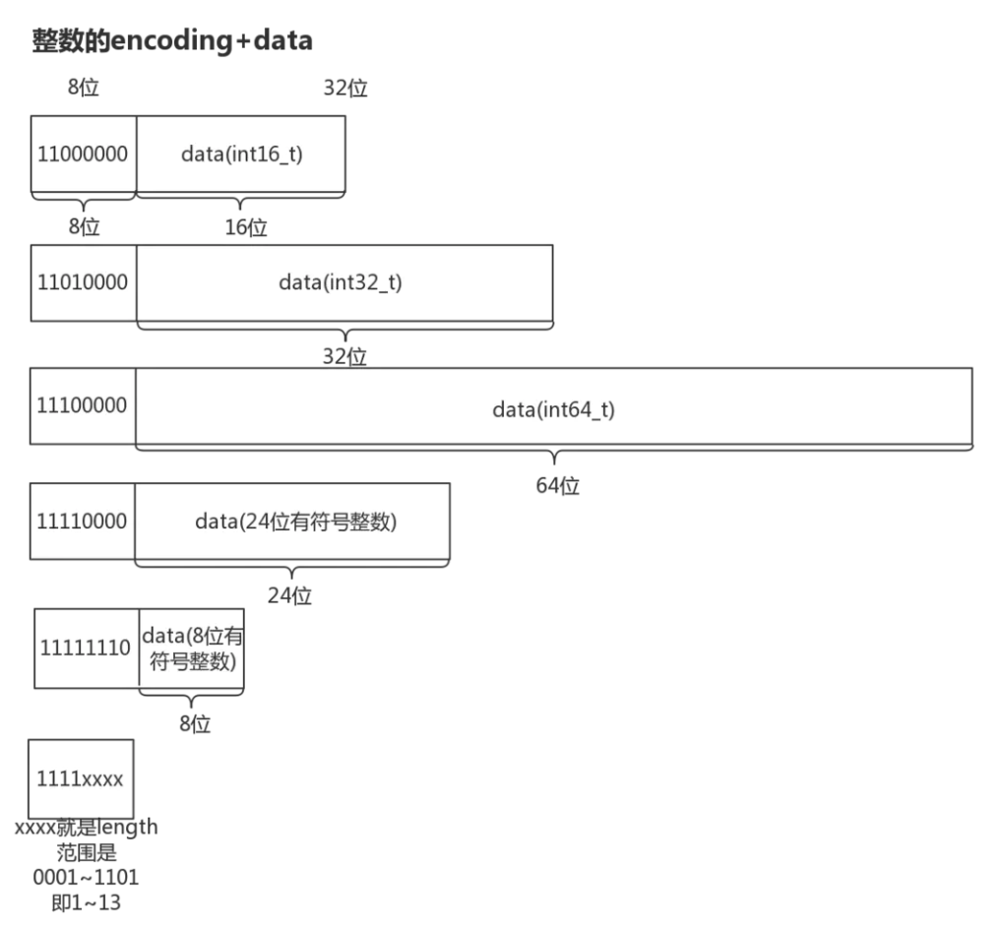
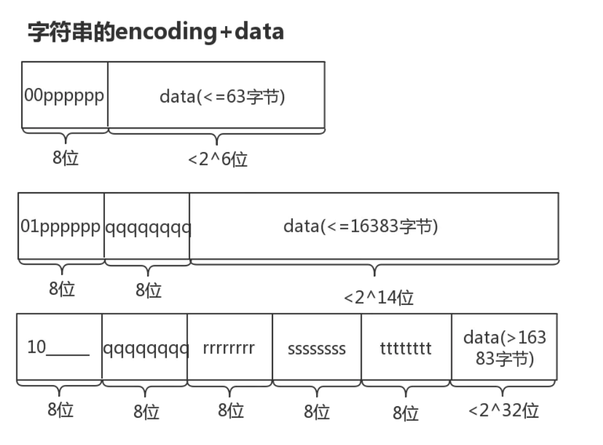

看看redis中zset用了跳表和压缩列表，本文细讲压缩列表是什么？
// 文中引用的代码来源于Redis3.2
前言
Redis是基于内存的nosql，有些场景下为了节省内存redis会用“时间”换“空间”。
ziplist就是很典型的例子。
介绍
ziplist是list键、hash键以及zset键的底层实现之一（3.0之后list键已经不直接用ziplist和linkedlist作为底层实现了，取而代之的是quicklist）
这些键的常规底层实现如下：
- list键：双向链表
- hash键：字典dict
- zset键：跳跃表zskiplist
但是当list键里包含的元素较少、并且每个元素要么是小整数要么是长度较小的字符串时，redis将会用ziplist作为list键的底层实现。同理hash和zset在这种场景下也会使用ziplist。
既然已有底层结构可以实现list、hash、zset键，为什么还要用ziplist呢？
当然是为了节省内存空间
我们先来看看ziplist是如何压缩的
原理
整体布局
ziplist是由*一系列特殊编码的连续内存块组成的顺序存储结构*，类似于数组，ziplist在内存中是连续存储的，但是不同于数组，为了节省内存 ziplist的每个元素所占的内存大小可以不同（数组中叫元素，ziplist叫节点entry，下文都用“节点”），每个节点可以用来存储一个整数或者一个字符串。
下图是ziplist在内存中的布局

- zlbytes: ziplist的长度（单位: 字节)，是一个32位无符号整数
- zltail: ziplist最后一个节点的偏移量，反向遍历ziplist或者pop尾部节点的时候有用。
- zllen: ziplist的节点（entry）个数
- entry: 节点
- zlend: 值为0xFF，用于标记ziplist的结尾
普通数组的遍历是根据数组里存储的数据类型 找到下一个元素的，例如int类型的数组访问下一个元素时每次只需要移动一个sizeof(int)就行（实际上开发者只需让指针p+1就行，在这里引入sizeof(int)只是为了说明区别）。
上文说了，ziplist的每个节点的长度是可以不一样的，而我们面对不同长度的节点又不可能直接sizeof(entry)，那么它是怎么访问下一个节点呢？
ziplist将一些必要的偏移量信息记录在了每一个节点里，使之能跳到上一个节点或下一个节点。
接下来我们看看节点的布局
节点的布局(entry)
每个节点由三部分组成：prevlength、encoding、data
- prevlengh: 记录上一个节点的长度，为了方便反向遍历ziplist
- encoding: 当前节点的编码规则，下文会详细说
- data: 当前节点的值，可以是数字或字符串
为了节省内存，根据上一个节点的长度prevlength 可以将ziplist节点分为两类：

- entry的前8位小于254，则这8位就表示上一个节点的长度
- entry的前8位等于254，则意味着上一个节点的长度无法用8位表示，后面32位才是真实的prevlength。用254 不用255(11111111)作为分界是因为255是zlend的值，它用于判断ziplist是否到达尾部。
根据当前节点存储的数据类型及长度，可以将ziplist节点分为9类：
其中整数节点分为6类：

整数节点的encoding的长度为8位，其中高2位用来区分整数节点和字符串节点（高2位为11时是整数节点），低6位用来区分整数节点的类型，定义如下:
#define ZIP_INT_16B (0xc0 | 0<<4)//整数data,占16位（2字节）
#define ZIP_INT_32B (0xc0 | 1<<4)//整数data,占32位（4字节）
#define ZIP_INT_64B (0xc0 | 2<<4)//整数data,占64位（8字节）
#define ZIP_INT_24B (0xc0 | 3<<4)//整数data,占24位（3字节）
#define ZIP_INT_8B 0xfe //整数data,占8位（1字节）
/* 4 bit integer immediate encoding */
//整数值1~13的节点没有data，encoding的低四位用来表示data
#define ZIP_INT_IMM_MASK 0x0f
#define ZIP_INT_IMM_MIN 0xf1 /* 11110001 */
#define ZIP_INT_IMM_MAX 0xfd /* 11111101 */
值得注意的是 最后一种encoding是存储整数0到12的节点的encoding，它没有额外的data部分，encoding的高4位表示这个类型，低4位就是它的data。这种类型的节点的encoding大小介于ZIP_INT_24B与ZIP_INT_8B之间（1到13），但是为了表示整数0，取出低四位xxxx之后会将其**-1**作为实际的data值（0~12）。在函数zipLoadInteger中，我们可以看到这种类型节点的取值方法：
...
} else if (encoding >= ZIP_INT_IMM_MIN && encoding <= ZIP_INT_IMM_MAX) {
ret = (encoding & ZIP_INT_IMM_MASK)-1;
}
...
字符串节点分为3类：

- 当data小于63字节时(2^6)，节点存为上图的第一种类型，高2位为00，低6位表示data的长度。
- 当data小于16383字节时(2^14)，节点存为上图的第二种类型，高2位为01，后续14位表示data的长度。
- 当data小于4294967296字节时(2^32)，节点存为上图的第二种类型，高2位为10，下一字节起连续32位表示data的长度。
上图可以看出：
不同于整数节点encoding永远是8位，字符串节点的encoding可以有8位、16位、40位三种长度
相同encoding类型的整数节点 data长度是固定的，但是相同encoding类型的字符串节点，data长度取决于encoding后半部分的值。
#define ZIP_STR_06B (0 << 6)//字符串data,最多有2^6字节(encoding后半部分的length有6位,length决定data有多少字节)
#define ZIP_STR_14B (1 << 6)//字符串data,最多有2^14字节
#define ZIP_STR_32B (2 << 6)//字符串data,最多有2^32字节
上文介绍了ziplist节点（entry）的分类，知道了节点可以细分为9种类型，那么当遍历一个ziplist时，指针到达某个节点时 如何判断出节点的类型从而找到data呢？
已知节点的位置，求data的值
根据图2 entry布局 可以看出，若要算出data的偏移量，得先计算出prevlength所占内存大小（1字节和5字节）：
//根据ptr指向的entry，返回这个entry的prevlensize
#define ZIP_DECODE_PREVLENSIZE(ptr, prevlensize) do { \
if ((ptr)[0] < ZIP_BIGLEN) { \
(prevlensize) = 1; \
} else { \
(prevlensize) = 5; \
} \
} while(0);
接着再用ZIP_DECODE_LENGTH(ptr + prevlensize, encoding, lensize, len)算出encoding所占的字节，返回给lensize；data所占的字节返回给len
//根据ptr指向的entry求出该entry的len（encoding里存的 data所占字节）和lensize（encoding所占的字节）
#define ZIP_DECODE_LENGTH(ptr, encoding, lensize, len) do { \
ZIP_ENTRY_ENCODING((ptr), (encoding)); \
if ((encoding) < ZIP_STR_MASK) { \
if ((encoding) == ZIP_STR_06B) { \
(lensize) = 1; \
(len) = (ptr)[0] & 0x3f; \
} else if ((encoding) == ZIP_STR_14B) { \
(lensize) = 2; \
(len) = (((ptr)[0] & 0x3f) << 8) | (ptr)[1]; \
} else if (encoding == ZIP_STR_32B) { \
(lensize) = 5; \
(len) = ((ptr)[1] << 24) | \
((ptr)[2] << 16) | \
((ptr)[3] << 8) | \
((ptr)[4]); \
} else { \
assert(NULL); \
} \
} else { \
(lensize) = 1; \
(len) = zipIntSize(encoding); \
} \
} while(0);
//将ptr的encoding解析成1个字节：00000000、01000000、10000000(字符串类型)和11??????(整数类型)
//如果是整数类型，encoding直接照抄ptr的;如果是字符串类型，encoding被截断成一个字节并清零后6位
#define ZIP_ENTRY_ENCODING(ptr, encoding) do { \
(encoding) = (ptr[0]); \
if ((encoding) < ZIP_STR_MASK) (encoding) &= ZIP_STR_MASK; \
} while(0)
//根据encoding返回数据(整数)所占字节数
unsigned int zipIntSize(unsigned char encoding) {
switch(encoding) {
case ZIP_INT_8B: return 1;
case ZIP_INT_16B: return 2;
case ZIP_INT_24B: return 3;
case ZIP_INT_32B: return 4;
case ZIP_INT_64B: return 8;
default: return 0; /* 4 bit immediate */
}
assert(NULL);
return 0;
}
完成以上步骤之后，即可算出data的位置:ptr+prevlensize+lensize，以及data的长度len
ziplist接口
上文已经阐述了ziplist的底层内存布局，接下来看看一些基本的增删改查操作在ziplist中是如何执行的。
ziplistNew 创建一个ziplist O(1)
/* Create a new empty ziplist. */
unsigned char *ziplistNew(void) {
unsigned int bytes = ZIPLIST_HEADER_SIZE+1;//<zlbytes>4字节<zltail>4字节<zllen>2字节<zlend>1字节，没有entry节点
unsigned char *zl = zmalloc(bytes);
ZIPLIST_BYTES(zl) = intrev32ifbe(bytes);//<zlbytes>赋值
ZIPLIST_TAIL_OFFSET(zl) = intrev32ifbe(ZIPLIST_HEADER_SIZE);//<zltail>
ZIPLIST_LENGTH(zl) = 0;//<zllen>
zl[bytes-1] = ZIP_END;//<zlend>
return zl;
}
#define ZIPLIST_HEADER_SIZE (sizeof(uint32_t)*2+sizeof(uint16_t))//空ziplist除了<zlend>的大小
#define ZIPLIST_BYTES(zl) (*((uint32_t*)(zl)))//<zlbyte>的指针的值，可读可写
#define ZIPLIST_TAIL_OFFSET(zl) (*((uint32_t*)((zl)+sizeof(uint32_t))))//<zltail>的指针的值
#define ZIPLIST_HEADER_SIZE (sizeof(uint32_t)*2+sizeof(uint16_t))//空ziplist除了<zlend>的大小
#define ZIPLIST_LENGTH(zl) (*((uint16_t*)((zl)+sizeof(uint32_t)*2)))//<zllen>的指针的值
参照着图1理解会直观些，分配了一块内存并初始化<zlbytes><zltail><zllen><zlend>，没有entry。
ziplistFind 从ziplist里找出一个entry O(n)
//返回p节点之后data与vstr(长度是vlen)相等的节点，只找p节点之后每隔skip的节点
//时间复杂度 O(n)
unsigned char *ziplistFind(unsigned char *p, unsigned char *vstr, unsigned int vlen, unsigned int skip) {
int skipcnt = 0;
unsigned char vencoding = 0;
long long vll = 0;
while (p[0] != ZIP_END) {
unsigned int prevlensize, encoding, lensize, len;
unsigned char *q;
ZIP_DECODE_PREVLENSIZE(p, prevlensize);
ZIP_DECODE_LENGTH(p + prevlensize, encoding, lensize, len);
q = p + prevlensize + lensize;//当前节点的data
if (skipcnt == 0) {
/* Compare current entry with specified entry */
if (ZIP_IS_STR(encoding)) {//判断当前节点是不是字符串节点
if (len == vlen && memcmp(q, vstr, vlen) == 0) {
return p;
}
} else {
/* Find out if the searched field can be encoded. Note that
* we do it only the first time, once done vencoding is set
* to non-zero and vll is set to the integer value. */
if (vencoding == 0) {//这个代码块只会执行一次,计算vstr的整数表示
if (!zipTryEncoding(vstr, vlen, &vll, &vencoding)) {
//将参数给的节点vstr当做整数节点转换；将data值返回给vll，节点编码返回给vencoding
//进入这个代码块说明将vstr转换成整数失败，vencoding不变，下次判断当前节点是整数节点之后可以跳过这个节点
/* If the entry can't be encoded we set it to
* UCHAR_MAX so that we don't retry again the next
* time. */
vencoding = UCHAR_MAX;//当前节点是整数节点，但是vstr是字符串节点，跳过不用比较了
}
/* Must be non-zero by now */
assert(vencoding);
}
/* Compare current entry with specified entry, do it only
* if vencoding != UCHAR_MAX because if there is no encoding
* possible for the field it can't be a valid integer. */
if (vencoding != UCHAR_MAX) {
long long ll = zipLoadInteger(q, encoding);//算出当前节点的data
if (ll == vll) {
return p;
}
}
}
/* Reset skip count */
skipcnt = skip;
} else {
/* Skip entry */
skipcnt--;
}
/* Move to next entry */
p = q + len;
}
return NULL;
}
//尝试将entry地址的内容转换成整数，并根据这个整数算出一个合适的encoding返回给encoding参数。
//若无法转换成整数，则encoding不变，返回0，等到下次调用zipEncodeLength时再计算一个该字符串的encoding
int zipTryEncoding(unsigned char *entry, unsigned int entrylen, long long *v, unsigned char *encoding) {
long long value;
if (entrylen >= 32 || entrylen == 0) return 0;
if (string2ll((char*)entry,entrylen,&value)) {
/* Great, the string can be encoded. Check what's the smallest
* of our encoding types that can hold this value. */
if (value >= 0 && value <= 12) {
*encoding = ZIP_INT_IMM_MIN+value;
} else if (value >= INT8_MIN && value <= INT8_MAX) {
*encoding = ZIP_INT_8B;
} else if (value >= INT16_MIN && value <= INT16_MAX) {
*encoding = ZIP_INT_16B;
} else if (value >= INT24_MIN && value <= INT24_MAX) {
*encoding = ZIP_INT_24B;
} else if (value >= INT32_MIN && value <= INT32_MAX) {
*encoding = ZIP_INT_32B;
} else {
*encoding = ZIP_INT_64B;
}
*v = value;
return 1;
}
return 0;
}
/* Read integer encoded as 'encoding' from 'p' */
int64_t zipLoadInteger(unsigned char *p, unsigned char encoding) {
int16_t i16;
int32_t i32;
int64_t i64, ret = 0;
if (encoding == ZIP_INT_8B) {
ret = ((int8_t*)p)[0];
} else if (encoding == ZIP_INT_16B) {
memcpy(&i16,p,sizeof(i16));
memrev16ifbe(&i16);
ret = i16;
} else if (encoding == ZIP_INT_32B) {
memcpy(&i32,p,sizeof(i32));
memrev32ifbe(&i32);
ret = i32;
} else if (encoding == ZIP_INT_24B) {
i32 = 0;
memcpy(((uint8_t*)&i32)+1,p,sizeof(i32)-sizeof(uint8_t));
memrev32ifbe(&i32);
ret = i32>>8;
} else if (encoding == ZIP_INT_64B) {
memcpy(&i64,p,sizeof(i64));
memrev64ifbe(&i64);
ret = i64;
} else if (encoding >= ZIP_INT_IMM_MIN && encoding <= ZIP_INT_IMM_MAX) {
ret = (encoding & ZIP_INT_IMM_MASK)-1;
} else {
assert(NULL);
}
return ret;
}
其他接口
- ziplistInsert 往ziplist里插入一个entry 时间复杂度 平均:O(n), 最坏:O(n²)
- ziplistDelete 从siplist里删除一个entry 时间复杂度 平均:O(n), 最坏:O(n²)
为什么插入节点和删除节点两个接口的最坏时间复杂度会是O(n²)呢？这是由于ziplist的“连锁更新”导致的，连锁更新在最坏情况下需要对ziplist执行n次空间重分配操作，而且每次空间重分配的最坏时间复杂度为O(n) —-《Redis设计与实现》
但是出现“连锁更新”的情况并不多见，所以这里基本不会造成性能问题。
篇幅有限这里不能细说连锁更新，感兴趣可以阅读《Redis设计与实现》的相关章节以及ziplist.c里的**__ziplistCascadeUpdate()**函数。
总结
- ziplist是为节省内存空间而生的。
- ziplist是一个为Redis专门提供的底层数据结构之一，本身可以有序也可以无序。当作为list和hash的底层实现时，节点之间没有顺序；当作为zset的底层实现时，节点之间会按照大小顺序排列。